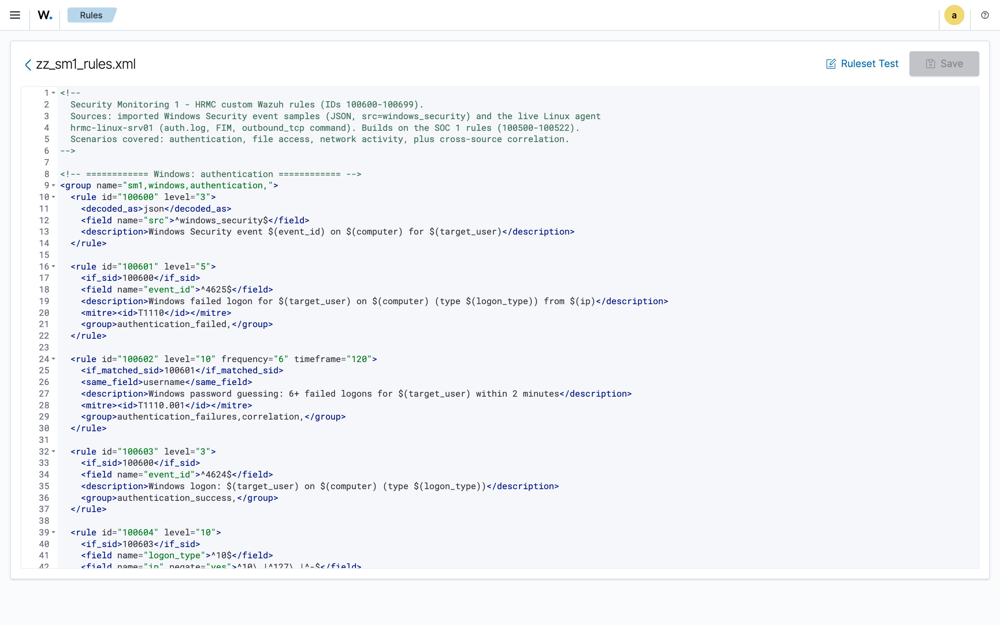

Care Access Navigator
Security Monitoring 1 — Criterion 1: Monitoring Environment Setup
Monitoring environment, security event analysis, monitoring implementation and reporting with Wazuh, a live Linux agent and imported Windows samples
| Prepared by: | Akhila Chennamaneni, IAM & GRC Analyst (author) |
| Organization: | HealthLine Regional Medical Center (HRMC), Care Access Navigator (CAN) capstone |
| Course: | Security Monitoring 1 (DAE 6-Month Cybersecurity, Cohort 2) |
| Rubric criterion: | Criterion 1: Monitoring Environment Setup |
| Environment: | Wazuh 4.9.2; live Linux agent hrmc-linux-srv01; Windows Security samples (option B, instructor-approved); capstone Keycloak and EHR logs |
| Date: | November 18, 2026 |
Windows source (option B, agreed with the instructor): no live Windows host was available, so Windows Security events were
imported as samples in the Microsoft Security log schema (event IDs 4624, 4625, 4634, 4663, 4732, 5156). Every imported event is tagged
"sample": "imported-synthetic". The Linux source is live: a Debian 12 server (hrmc-linux-srv01) runs the official Wazuh agent 4.9.2,
connected to the manager over the agent protocol (port 1514/tcp), and its SSH, file and network activity in this report is real.
1. Monitoring Environment Setup
1.1 Installation and basic configuration
| Component | Version / image | Configuration |
|---|
| Wazuh manager | wazuh/wazuh-manager:4.9.2 | Custom rules soc1_rules.xml + zz_sm1_rules.xml; email notification; 5 log files under /var/log/soc1; vulnerability detection disabled (section 3.6) |
| Wazuh indexer | wazuh/wazuh-indexer:4.9.2 (OpenSearch) | Single node, TLS certificates from the official generator, 1 GB heap |
| Wazuh dashboard | wazuh/wazuh-dashboard:4.9.2 | https://localhost:5601; custom dashboard imported as saved objects |
| Linux agent | hrmc-linux-agent:1.0 (Debian 12 + wazuh-agent 4.9.2) | auth.log collection, real-time file integrity monitoring of /srv/ehr_exports, outbound TCP command every 30 s |
| MailHog | mailhog/mailhog:v1.0.1 | Test SMTP server for alert email (port 8025 web inbox) |
1.2 Network configuration
# Network configuration (docker network inspect single-node_default), 2026-11-18T19:22:19Z
hrmc-jumpbox 172.21.0.7/16
hrmc-linux-srv01 172.21.0.6/16
single-node-mailhog-1 172.21.0.2/16
single-node-wazuh.dashboard-1 172.21.0.5/16
single-node-wazuh.indexer-1 172.21.0.3/16
single-node-wazuh.manager-1 172.21.0.4/16
# Published ports
single-node-wazuh.manager-1 0.0.0.0:1514-1515->1514-1515/tcp, [::]:1514-1515->1514-1515/tcp, 0.0.0.0:514->514/udp, [::]:514->514/udp, 0.0.0.0:55000->55000/tcp, [::]:55000->55000/tcp
hrmc-jumpbox
hrmc-linux-srv01
single-node-wazuh.dashboard-1 0.0.0.0:5601->5601/tcp, [::]:5601->5601/tcp
single-node-wazuh.indexer-1 0.0.0.0:9200->9200/tcp, [::]:9200->9200/tcp
single-node-mailhog-1 0.0.0.0:8025->8025/tcp, [::]:8025->8025/tcp
# Agent connection
Agent ID: 001
Agent Name: hrmc-linux-srv01
IP address: any
Status: Active
Client version: Wazuh v4.9.2
Last keep alive: 1795029737
2026/11/18 19:19:57 wazuh-agentd: INFO: (4102): Connected to the server ([wazuh.manager]:1514/tcp).
All components share the Docker bridge network single-node_default (172.21.0.0/16). Only the ports analysts and agents need are published:
1514-1515/tcp (agent events and enrollment), 514/udp (syslog), 55000 (API), 9200 (indexer), 5601 (dashboard), 8025 (mail).
1.3 Log collection from Windows and Linux, with verified connectivity
| Source type | How it is collected | Verification |
|---|
| Linux (hrmc-linux-srv01) | Wazuh agent 001: /var/log/auth.log, file integrity monitoring, command output | Agent Active in agent_control and the dashboard (Screenshot 2); agent log: Connected to the server ([wazuh.manager]:1514/tcp); alerts from agent hrmc-linux-srv01 in the index |
| Windows (HRMC-WS-PFS-02, HRMC-FS01 and 4 other workstations) | Imported Security log samples (JSON) read by the manager's logcollector from /var/log/soc1/windows_security.json | logcollector counted the events; 637 baseline events + scenario indexed as data.src = windows_security; rule tester (wazuh-logtest) decodes them into fields |
| Keycloak sign-in / admin, EHR access | Capstone logs (JSON) via logcollector | Alerts with data.src keycloak_login, keycloak_admin, ehr_access |

Screenshot 2: Wazuh endpoints view: agent 001 hrmc-linux-srv01, Debian 12, v4.9.2, status active
1.4 Alert rules for three security scenarios
| Scenario | Windows rules | Linux rules (live agent) | Application rules |
|---|
| Authentication | 100601 failed logon; 100602 6 failures / 2 min (password guessing); 100604 RDP logon from outside the network; 100605 lockout; 100606 privileged group change | Built-in 5760 failed SSH password, 5763 SSH brute force, 5551 PAM failures, 40112 failures followed by success | 100501-100507 Keycloak (SOC 1) |
| File access | 100610 file read; 100611 read on the EHR export share (ePHI); 100612 20+ reads in 60 s | Built-in 554 / 550 / 553 file added / changed / deleted in /srv/ehr_exports (real-time FIM) | 100521 / 100522 EHR record access (SOC 1) |
| Network activity | 100620 connection allowed; 100621 connection to a known-bad address (203.0.113.0/24) | 100630 TCP connection to a known-bad address (outbound_tcp command) | - |
| Cross-source | 100651 mass EHR export reads + outbound to bad address (same user) | | 100650 Windows RDP from outside + EHR record access (same user) |

Screenshot 5: the rule file zz_sm1_rules.xml in Server management → Rules
1.5 Monitoring workflow: alert routing and notification
| Alert level | Routing | Notification |
|---|
| 3-7 | Stored in the indexer; dashboard; daily review | None |
| 8-9 | Tier 1 queue in the dashboard | None (seen within the shift) |
| 10-11 | Tier 1 triage | Email to soc-tier1@hrmc.lab (email_alert_level 10) |
| 12-15 | Tier 1 triage, SOC lead informed immediately | Email to soc-tier1 and soc-lead@hrmc.lab, no delay (email_alerts, level 12) |
During the scenario Wazuh sent 23 emails: 20 to soc-tier1@hrmc.lab,soc-lead@hrmc.lab, 3 to soc-tier1@hrmc.lab (Screenshot 6).
Full escalation workflow (Tier 1 → Tier 2 → Incident Commander) is in the SOC 1 submission, Mermaid diagram soc_alert_workflow.mmd.

Screenshot 6: MailHog inbox, level 14 and 15 notifications to soc-lead@hrmc.lab